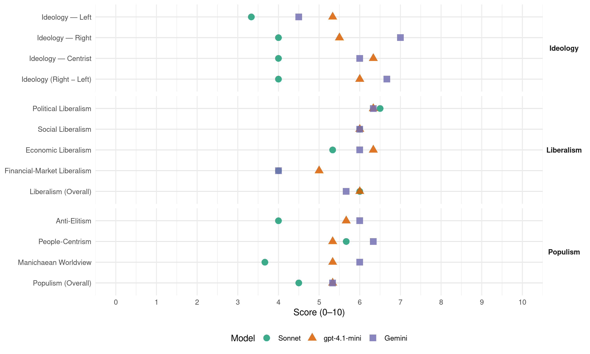

PDG (Chile, 2021)
manifesto_id 155401_202111
Get full text: This site shows derived annotations and short verbatim quotes only. The full manifesto text is © Manifesto Project / WZB — obtain it via manifesto-project.wzb.eu using the manifesto_id above.
Headline scores
| Dimension | Sonnet | gpt-4.1-mini | Gemini |
|---|---|---|---|
| Populism (Overall) | 4.5 | 5.3 | 5.3 |
| Anti-Elitism | 4.0 | 5.7 | 6.0 |
| People-Centrism | 5.7 | 5.3 | 6.3 |
| Manichaean Worldview | 3.7 | 5.3 | 6.0 |
| Ideology (Right − Left) | 4.0 | 6.0 | 6.7 |
| Liberalism (Overall) | 6.0 | 6.0 | 5.7 |
| Political Liberalism | 6.5 | 6.3 | 6.3 |
| Social Liberalism | 6.0 | 6.0 | 6.0 |
| Economic Liberalism | 5.3 | 6.3 | 6.0 |
| Financial-Market Liberalism | 4.0 | 5.0 | 4.0 |
Evidence per dimension
Economic Liberalism
Gemini · score 7.0 · verified · chunk 1
“empresas independientes de su tamaño puedan competir”
actividad económica responsable con un escenario apropiado en que las empresas independientes de su tamaño puedan competir, sostenerse y crecer
Gemini · score 7.0 · verified · chunk 2
“apoye el desarrollo de los mercados”
orientar un Estado facilitador de la creación de valor, que apoye el desarrollo de los mercados, ya que la evidencia
Gemini · score 4.0 · verified · chunk 3
“el empleador que no cumpla con esta política será multado”
no haya más turismo laboral en Chile. Por este motivo, el empleador que no cumpla con esta política será multado. 196. Mayor cuidado de las fronteras.
gpt-4.1-mini · score 7.0 · verified · chunk 1
“Promovemos y apoyamos políticas que impulsan la ciencia y la tecnología”
Promovemos y apoyamos políticas que impulsan la ciencia y la tecnología que fortalecerán la actividad económica responsable con un escenario apropiado en que las empresas independientes de su tamaño puedan competir, sostenerse y crecer, creando empleos de calidad.
gpt-4.1-mini · score 7.0 · verified · chunk 2
“disminuir los impuestos en general, además de elevar la competencia”
…se propone orientar un Estado facilitador de la creación de valor, que apoye el desarrollo de los mercados, ya que la evidencia muestra que al disminuir los impuestos en general, además de elevar la competencia logrando productos y servicios de mejor calidad a menor costo…
gpt-4.1-mini · score 5.0 · verified · chunk 3
“mejorar la competitividad turística de los puertos de Chile”
Mejorar la infraestructura y equipamiento portuario de Chile, que permita abrir nuevos puertos chilenos al desarrollo de la actividad turística de Cruceros. Aprovechar las recientes modificaciones de ley de Cabotaje N°21.138, que permite el tránsito de cruceros internacionales entre puertos chilenos para mejorar la competitividad turística de los puertos de Chile creando servicios e infraestructura turística acorde a la demanda de los pasajeros de cruceros.
Sonnet · score 5.0 · verified · chunk 1
“empresas independientes de su tamaño puedan competir”
con un escenario apropiado en que las empresas independientes de su tamaño puedan competir, sostenerse y crecer, creando empleos de calidad.
Sonnet · score 6.0 · verified · chunk 2
“apoye el desarrollo de los mercados”
se propone orientar un Estado facilitador de la creación de valor, que apoye el desarrollo de los mercados, ya que la evidencia muestra que al disminuir los impuestos
Sonnet · score 5.0 · verified · chunk 3
“mejorar la competitividad turística de los puertos de Chile”
para mejorar la competitividad turística de los puertos de Chile creando servicios e infraestructura turística acorde a la demanda
Financial-Market Liberalism
Gemini · score 3.0 · verified · chunk 1
“Regular las tasas máximas convencionales de Intereses”
Se pedirá al Banco Central de Chile Regular las tasas máximas convencionales de Intereses como también las tasas Libor
Gemini · score 5.0 · verified · chunk 2
“créditos hipotecarios en pesos sin más reajuste”
118. Créditos hipotecarios en pesos. Se propone fomentar los créditos hipotecarios en pesos sin más reajuste automático
gpt-4.1-mini · score 5.0 · mixed · chunk 1
“Regular las tasas máximas convencionales de Intereses”
Banco Central de Chile: Tasas de Interés y valores de cambio. Se pedirá al Banco Central de Chile Regular las tasas máximas convencionales de Intereses como también las tasas Libor máximas para importaciones que permiten a entidades financieras elevarlas mucho.
gpt-4.1-mini · score 5.0 · verified · chunk 2
“Banco Estado Mujer ofrecerá todos los instrumentos financieros”
…El banco del estado destinara un área especializada para la mujer emprendedora (Banco Estado Mujer). Este banco ofrecerá todos los instrumentos financieros con que cuenta, realizando evaluaciones de riesgos más flexibles y tasas de interés preferenciales…
Sonnet · score 4.0 · verified · chunk 1
“Regular las tasas máximas convencionales de Intereses”
Se pedirá al Banco Central de Chile Regular las tasas máximas convencionales de Intereses como también las tasas Libor máximas para importaciones
Sonnet · score 5.0 · mixed · chunk 2
“mayor control de sus tasas máximas”
El Banco Central deberá realizar un mayor control de sus tasas máximas, no permitiendo las grandes diferencias entre captación y colocación
Political Liberalism
Gemini · score 8.0 · verified · chunk 1
“Democracia representativa”
Nuestra ideología… Democracia representativa … Funcionamiento: Esperado vs. Realidad
Gemini · score 6.0 · verified · chunk 2
“ley de protección al que denuncia corrupción”
200. Ley de Protección al que denuncia corrupción Esta ley permitirá que cualquier trabajador
Gemini · score 5.0 · verified · chunk 3
“Todo trabajador podrá apelar a la “libertad de conciencia””
ASPECTOS LABORALES 199. Libertad de conciencia Todo trabajador podrá apelar a la “libertad de conciencia” frente a una orden de su jefe directo o indirecto.
gpt-4.1-mini · score 8.0 · verified · chunk 1
“Democracia verdadera basada en una participación ciudadana activa”
Creemos en la DEMOCRACIA VERDADERA basada en una participación ciudadana activa, informada y organizada, que permita una interacción universal.
gpt-4.1-mini · score 6.0 · verified · chunk 2
“Ley de Protección al que denuncia corrupción”
…Esta ley permitirá que cualquier trabajador o trabajadora del sistema privado o público que denuncie un caso de corrupción pueda ser despedido o sancionado por denunciar un hecho de corrupción. En efecto, en el caso de empleados públicos tendrán una inmunidad por 5 años…
gpt-4.1-mini · score 5.0 · verified · chunk 3
“la democracia, derechos, elecciones, cortes, medios”
No direct quote with all these words, but the closest is: “Se estudiarán todos los límites del territorio nacional y se entregará un informe a la comisión de relaciones exteriores del Senado en carácter de reservado” indicating parliamentary involvement and government institutions.
Sonnet · score 7.0 · verified · chunk 1
“DEMOCRACIA REPRESENTATIVA, PARTICIPATIVA y DIGITAL”
El Partido de la Gente creer, promueve, y respeta la verdadera trilogía en que debe sostenerse nuestra democracia: REPRESENTATIVA, PARTICIPATIVA y DIGITAL.
Sonnet · score 6.0 · verified · chunk 2
“directorio ratificado por el Congreso y auditado”
Fonasa será una unidad autónoma con un directorio ratificado por el Congreso y auditado por contraloría General de la República
Sonnet · score 5.0 · mixed · chunk 3
“unidad especial en las áreas de auditorías de la ANI”
se contará con una unidad especial en las áreas de auditorías de la ANI -Agencia Nacional de Inteligencia- que después pasará a las instancias judiciales
Liberalism (Overall)
Gemini · score 7.0 · verified · chunk 1
“Democracia representativa”
Nuestra ideología… Democracia representativa … Funcionamiento: Esperado vs. Realidad
Gemini · score 6.0 · verified · chunk 2
“apoye el desarrollo de los mercados”
orientar un Estado facilitador de la creación de valor, que apoye el desarrollo de los mercados, ya que la evidencia
Gemini · score 4.0 · verified · chunk 3
“Todo trabajador podrá apelar a la “libertad de conciencia””
ASPECTOS LABORALES 199. Libertad de conciencia Todo trabajador podrá apelar a la “libertad de conciencia” frente a una orden de su jefe directo o indirecto.
gpt-4.1-mini · score 7.0 · verified · chunk 1
“Creemos en la DEMOCRACIA VERDADERA basada en una participación ciudadana activa”
Creemos en la DEMOCRACIA VERDADERA basada en una participación ciudadana activa, informada y organizada, que permita una interacción universal.
gpt-4.1-mini · score 6.0 · verified · chunk 2
“disminuir los impuestos en general, además de elevar la competencia”
…se propone orientar un Estado facilitador de la creación de valor, que apoye el desarrollo de los mercados, ya que la evidencia muestra que al disminuir los impuestos en general, además de elevar la competencia logrando productos y servicios de mejor calidad a menor costo…
gpt-4.1-mini · score 5.0 · verified · chunk 3
“mejorar la competitividad turística de los puertos de Chile”
Mejorar la infraestructura y equipamiento portuario de Chile, que permita abrir nuevos puertos chilenos al desarrollo de la actividad turística de Cruceros. Aprovechar las recientes modificaciones de ley de Cabotaje N°21.138, que permite el tránsito de cruceros internacionales entre puertos chilenos para mejorar la competitividad turística de los puertos de Chile creando servicios e infraestructura turística acorde a la demanda de los pasajeros de cruceros.
Sonnet · score 6.0 · verified · chunk 1
“respetando la institucionalidad y las leyes”
respetando siempre la institucionalidad y las leyes de nuestro país. El Partido de la Gente instalará la política al servicio de las personas
Sonnet · score 6.0 · verified · chunk 2
“Estado facilitador de la creación de valor”
se propone orientar un Estado facilitador de la creación de valor, que apoye el desarrollo de los mercados
Sonnet · score 5.0 · mixed · chunk 3
“mejorar la competitividad turística de los puertos de Chile”
para mejorar la competitividad turística de los puertos de Chile creando servicios e infraestructura turística acorde a la demanda
Anti-Elitism
Gemini · score 8.0 · verified · chunk 1
“La democracia capturada”
tradicionales y sus partidos políticos. … La democracia capturada … Salvando la Democracia
Gemini · score 6.0 · verified · chunk 2
“eliminación de cargos creados por cuoteo político”
178. Eliminación de cargos creados por cuoteo político, y aportes a entidades para redirigirlos
Gemini · score 4.0 · verified · chunk 3
“la mayoría de los medios son de derecha”
período de 18 meses de protección laboral, es sabido que la mayoría de los medios son de derecha y los periodistas de izquierdas. Esta ley se aplica
gpt-4.1-mini · score 7.0 · verified · chunk 1
“la democracia capturada”
Ideologías políticas tradicionales y sus partidos políticos. La democracia capturada. Salvando la Democracia.
gpt-4.1-mini · score 4.0 · verified · chunk 2
“desacelerar el acaparamiento inmobiliario que ha provocado una inflación”
…se les asociara a una persona y no a la empresa en particular. De este modo desacelerar el acaparamiento inmobiliario que ha provocado una inflación en el valor actual del suelo y de las propiedades. 87. Revisión y gestión para la promulgación de la Nueva Ley de Arriendo de Vivienda…
gpt-4.1-mini · score 6.0 · verified · chunk 3
“regular el caos migratorio que actualmente existe”
Se propone que sólo puedan trabajar en territorio chileno los inmigrantes con visa de trabajo emitida por el Consulado chileno del país de origen del migrante. Igual política se aplicará para el caso de las solicitudes de residencia por cualquier motivo (razones familiares o de otro tipo). El propósito es regular el caos migratorio que actualmente existe y que no haya más turismo laboral en Chile.
Sonnet · score 6.0 · verified · chunk 1
“la democracia capturada”
Ideologías políticas tradicionales y sus partidos políticos. El papel de las ideologías y partidos políticos La democracia capturada Salvando la Democracia
Sonnet · score 4.0 · mixed · chunk 2
“echa la ley ésta hecha la trampa”
Es claro y conocido de todos que echa la ley ésta hecha la trampa, las leyes se conforman con la finalidad de establecer un ordenamiento
Sonnet · score 2.0 · verified · chunk 3
“la mayoría de los medios son de derecha”
es sabido que la mayoría de los medios son de derecha y los periodistas de izquierdas
Ideology — Centrist
Gemini · score 8.0 · verified · chunk 1
“un país de ciudadanos unidos e independientes”
misión, ese es: alcanzar a ser un país de ciudadanos unidos e independientes que no teman levantar su voz.
Gemini · score 4.0 · verified · chunk 2
“el Partido de la gente junto a un grupo inmenso”
Atención Primaria en salud”. Es por esto que el Partido de la gente junto a un grupo inmenso de colaboradores
gpt-4.1-mini · score 8.0 · verified · chunk 1
“la persona humana es el centro del quehacer social”
Nuestra máxima intransable es: “la persona humana es el centro del quehacer social” y buscaremos siempre ejes comunes que nos unan como ciudadanos por sobre nuestras diferencias personales.
gpt-4.1-mini · score 6.0 · verified · chunk 2
“personas conscientes del deterioro de la calidad de vida de la gente”
Somos chilenos con responsabilidad ciudadana, personas conscientes del deterioro de la calidad de vida de la gente, y lo graficamos simplemente, en tan sólo seis datos: “Boom de startup locales…
gpt-4.1-mini · score 5.0 · verified · chunk 3
“No se transa ni territorio ni mar con ningún país vecino”
No se transa ni territorio ni mar con ningún país vecino, se estudiarán todos los límites del territorio nacional y se entregará un informe a la comisión de relaciones exteriores del Senado en carácter de reservado en relación de los límites y riesgos geopolíticos, en particular el de los ríos como el Silala.
Sonnet · score 6.0 · verified · chunk 1
“derribar paradigmas ancestrales”
utilizará todos los mecanismos legalmente válidos para derribar paradigmas ancestrales, donde las personas hemos sido usadas para validar a otras personas en sus cargos
Sonnet · score 4.0 · verified · chunk 2
“personas conscientes del deterioro de la calidad de vida”
Somos chilenos con responsabilidad ciudadana, personas conscientes del deterioro de la calidad de vida de la gente
Sonnet · score 2.0 · verified · chunk 3
“regular el caos migratorio que actualmente existe”
El propósito es regular el caos migratorio que actualmente existe y que no haya más turismo laboral en Chile
Ideology — Left
Gemini · score 5.0 · verified · chunk 2
“impuesto ira en aumento en relación a la cantidad de propiedades”
en posesión de empresas se considerarán como propiedades lucrativas con un impuesto al arriendo. El impuesto ira en aumento en relación a la cantidad de propiedades bajo una misma firma
Gemini · score 4.0 · verified · chunk 3
“el ocio y la recreación es un derecho”
riqueza ecológica y cultural que poseen, pensando que el ocio y la recreación es un derecho para todos los ciudadanos de este país, más allá de los
gpt-4.1-mini · score 7.0 · verified · chunk 1
“Redistribución de gastos para apoyar pensiones, salud y educación”
Redistribución de gastos para apoyar pensiones, salud y educación. Se plantea como elemento básico que el estado ahorre al menos el 20% del presupuesto actual con el propósito de destinar esos recursos a pensiones, salud y educación.
gpt-4.1-mini · score 5.0 · verified · chunk 2
“aumentar los impuestos a las empresas”
…Aumento consistente de impuestos a las empresas5 Chile Recauda un 22,1% en impuestos Corporativos, mientras que el promedio OCDE se encuentra en 9,5%.6 Se observa un sistemático empobrecimiento de la población chilena y sus emprendedores…
gpt-4.1-mini · score 4.0 · verified · chunk 3
“la mayoría de los medios son de derecha y los periodistas de izquierdas”
En particular, los periodistas y profesionales de las comunicaciones tendrán esta ley, pero por un período de 18 meses de protección laboral, es sabido que la mayoría de los medios son de derecha y los periodistas de izquierdas. Esta ley se aplica a el personal de las Fuerzas Armadas y de Orden y también a los funcionarios públicos.
Sonnet · score 4.0 · verified · chunk 1
“Nunca más los recursos financieros serán el elemento”
Nunca más los recursos financieros serán el elemento que determine el desarrollo profesional, técnico o familiar de cada persona.
Sonnet · score 3.0 · verified · chunk 2
“acaparamiento inmobiliario que ha provocado una inflación”
De este modo desacelerar el acaparamiento inmobiliario que ha provocado una inflación en el valor actual del suelo y de las propiedades
Sonnet · score 3.0 · verified · chunk 3
“beneficio sea universal, sin importar si la madre”
se propone que este beneficio sea universal, sin importar si la madre tiene o no algún tipo de remuneración
Ideology (Right − Left)
Gemini · score 8.0 · verified · chunk 1
“un país de ciudadanos unidos e independientes”
misión, ese es: alcanzar a ser un país de ciudadanos unidos e independientes que no teman levantar su voz.
Gemini · score 6.0 · verified · chunk 2
“inmigración ilegal será retornada a su país”
tolerancia cero con los migrantes que infrinjan la ley. El extranjero que cometa delito será deportado una vez cumplida la pena, con la prohibición de retornar al país. La inmigración ilegal será retornada a su país de origen
Gemini · score 6.0 · verified · chunk 3
“regular el caos migratorio que actualmente existe”
del migrante. El propósito es regular el caos migratorio que actualmente existe y que no haya más turismo laboral en Chile. Por este
gpt-4.1-mini · score 7.0 · verified · chunk 1
“Redistribución de gastos para apoyar pensiones, salud y educación”
Redistribución de gastos para apoyar pensiones, salud y educación. Se plantea como elemento básico que el estado ahorre al menos el 20% del presupuesto actual con el propósito de destinar esos recursos a pensiones, salud y educación.
gpt-4.1-mini · score 5.0 · verified · chunk 2
“personas conscientes del deterioro de la calidad de vida de la gente”
Somos chilenos con responsabilidad ciudadana, personas conscientes del deterioro de la calidad de vida de la gente, y lo graficamos simplemente, en tan sólo seis datos: “Boom de startup locales…
gpt-4.1-mini · score 6.0 · verified · chunk 3
“tolerancia cero con los migrantes que infrinjan la ley”
También se propone tolerancia cero con los migrantes que infrinjan la ley. El extranjero que cometa delito será deportado una vez cumplida la pena, con la prohibición de retornar al país. La inmigración ilegal será retornada a su país de origen, donde el traslado será efectuado por la fuerza aérea de Chile.
Sonnet · score 4.0 · verified · chunk 1
“Partido de la Gente”
Como Partido de la Gente, soñamos con un Chile más inclusivo y menos individualista — centrist people-party framing without strong left or right ideological anchor
Sonnet · score 3.0 · mixed · chunk 2
“un Estado facilitador de la creación de valor”
se propone orientar un Estado facilitador de la creación de valor, que apoye el desarrollo de los mercados
Sonnet · score 4.0 · verified · chunk 3
“tolerancia cero con los migrantes que infrinjan la ley”
También se propone tolerancia cero con los migrantes que infrinjan la ley. El extranjero que cometa delito será deportado
Ideology — Right
Gemini · score 7.0 · verified · chunk 2
“inmigración ilegal será retornada a su país”
tolerancia cero con los migrantes que infrinjan la ley. El extranjero que cometa delito será deportado una vez cumplida la pena, con la prohibición de retornar al país. La inmigración ilegal será retornada a su país de origen
Gemini · score 7.0 · verified · chunk 3
“regular el caos migratorio que actualmente existe”
del migrante. El propósito es regular el caos migratorio que actualmente existe y que no haya más turismo laboral en Chile. Por este
gpt-4.1-mini · score 4.0 · verified · chunk 2
“tolerancia cero con los migrantes que infrinjan la ley”
…Se propone tolerancia cero con los migrantes que infrinjan la ley. El extranjero que cometa delito será deportado una vez cumplida la pena, con la prohibición de retornar al país. La inmigración ilegal será retornada a su país de origen…
gpt-4.1-mini · score 7.0 · verified · chunk 3
“tolerancia cero con los migrantes que infrinjan la ley”
También se propone tolerancia cero con los migrantes que infrinjan la ley. El extranjero que cometa delito será deportado una vez cumplida la pena, con la prohibición de retornar al país. La inmigración ilegal será retornada a su país de origen, donde el traslado será efectuado por la fuerza aérea de Chile.
Sonnet · score 2.0 · verified · chunk 1
“Nacionalidad Chilena o quienes tengan Residencia”
Las personas que podrán postular únicamente los mayores de 18 años de Nacionalidad Chilena o quienes tengan Residencia en Chile con un periodo mínimo de 15 años.
Sonnet · score 4.0 · verified · chunk 2
“regular el caos migratorio que actualmente existe”
El propósito es regular el caos migratorio que actualmente existe y que no haya más turismo laboral en Chile
Sonnet · score 6.0 · verified · chunk 3
“tolerancia cero con los migrantes que infrinjan la ley”
También se propone tolerancia cero con los migrantes que infrinjan la ley. El extranjero que cometa delito será deportado
Manichaean Worldview
Gemini · score 7.0 · verified · chunk 1
“usadas para validar a otras personas”
paradigmas ancestrales, donde las personas hemos sido usadas para validar a otras personas en sus cargos entregándoles
Gemini · score 5.0 · verified · chunk 2
“todos fuimos engañados haciéndonos saber”
mejorará el tiempo de traslado de las personas, si lo recuerdan todos fuimos engañados haciéndonos saber que mejoraría
gpt-4.1-mini · score 6.0 · verified · chunk 1
“la democracia capturada”
Ideologías políticas tradicionales y sus partidos políticos. La democracia capturada. Salvando la Democracia.
gpt-4.1-mini · score 3.0 · verified · chunk 2
“Lamentablemente los docentes quedan en total indefensión ante los apoderados”
…los profesores se ven inmersos en situaciones casi delictuales, bajo amenazas e incluso golpes o maltratos. Lamentablemente los docentes quedan en total indefensión ante los apoderados y/o sostenedores educacionales…
gpt-4.1-mini · score 7.0 · verified · chunk 3
“Nada justifica la violencia en la región de La Araucanía”
Para abordar la situación de violencia en la región de La Araucanía se creará una fuerza especial dependiente del Presidente de la República que reunirá todas las instancias de inteligencia civil y de las FF.AA. y de Orden para terminar con el terrorismo en la zona. El propósito es terminar con la violencia que atormenta a la ciudadanía. Nada justifica la violencia en la región de La Araucanía.
Sonnet · score 5.0 · verified · chunk 1
“se rompió la confianza pública”
Aquí se rompió la confianza pública, por lo tanto, se desmoronó el pacto social chileno, aquello que hace que vivamos en un mismo país
Sonnet · score 3.0 · verified · chunk 2
“personas encargadas de manera comercial”
ha sido restringida e interpretada de manera comercial por las personas encargadas. El sentido de la misma debe ser claro
Sonnet · score 3.0 · verified · chunk 3
“regular el caos migratorio que actualmente existe”
El propósito es regular el caos migratorio que actualmente existe y que no haya más turismo laboral en Chile
People-Centrism
Gemini · score 9.0 · verified · chunk 1
“EL PODER DE LA GENTE”
EL PODER DE LA GENTE 935990-48958500TABLA DE CONTENIDOS
Gemini · score 5.0 · verified · chunk 2
“Somos chilenos con responsabilidad ciudadana”
EMPRENDIMIENTO Y ECONOMIA Somos chilenos con responsabilidad ciudadana, personas conscientes del deterioro
Gemini · score 5.0 · verified · chunk 3
“haciendo protagonistas a las propias comunidades locales”
recuperando su arquitectura y costumbres ancestrales haciendo protagonistas a las propias comunidades locales con el fin de crear rutas turísticas con valor
gpt-4.1-mini · score 8.0 · verified · chunk 1
“Como Partido de la Gente, apoyamos a los jóvenes y sus luchas por un futuro más justo”
Es por eso que,como Partido de la Gente, apoyamos a los jóvenes y sus luchas por un futuro más justo, a los jubilados, profesores y emprendedores (entre otros). Lo que queremos, es que la gente salga de la burbuja de la conformidad y se haga presente en las problemáticas sociales, para que juntos busquemos la mejor solución.
gpt-4.1-mini · score 3.0 · verified · chunk 2
“personas conscientes del deterioro de la calidad de vida de la gente”
Somos chilenos con responsabilidad ciudadana, personas conscientes del deterioro de la calidad de vida de la gente, y lo graficamos simplemente, en tan sólo seis datos: “Boom de startup locales…
gpt-4.1-mini · score 5.0 · verified · chunk 3
“el ocio y la recreación es un derecho para todos los ciudadanos”
Se debe incrementar el beneficio de realizar Turismo Interno a familias vulnerables, comunidades locales y adultos mayores la posibilidad de experimentar y conocer los diferentes Destinos Turísticos de Chile, así como también de Parques y Reservas Nacionales con el fin de aprender de la riqueza ecológica y cultural que poseen, pensando que el ocio y la recreación es un derecho para todos los ciudadanos de este país, más allá de los ingresos económicos que se poseen.
Sonnet · score 8.0 · verified · chunk 1
“la persona humana es el centro del quehacer social”
nuestra máxima intransable es: “la persona humana es el centro del quehacer social” y buscaremos siempre ejes comunes que nos unan como ciudadanos
Sonnet · score 5.0 · verified · chunk 2
“Somos chilenos con responsabilidad ciudadana”
EMPRENDIMIENTO Y ECONOMIA Somos chilenos con responsabilidad ciudadana, personas conscientes del deterioro de la calidad de vida de la gente
Sonnet · score 4.0 · verified · chunk 3
“el ocio y la recreación es un derecho para todos los ciudadanos”
pensando que el ocio y la recreación es un derecho para todos los ciudadanos de este país, más allá de los ingresos económicos
Populism (Overall)
Gemini · score 8.0 · verified · chunk 1
“EL PODER DE LA GENTE”
EL PODER DE LA GENTE 935990-48958500TABLA DE CONTENIDOS
Gemini · score 5.0 · verified · chunk 2
“eliminación de cargos creados por cuoteo político”
178. Eliminación de cargos creados por cuoteo político, y aportes a entidades para redirigirlos
Gemini · score 3.0 · verified · chunk 3
“la mayoría de los medios son de derecha”
período de 18 meses de protección laboral, es sabido que la mayoría de los medios son de derecha y los periodistas de izquierdas. Esta ley se aplica
gpt-4.1-mini · score 7.0 · verified · chunk 1
“Como Partido de la Gente, apoyamos a los jóvenes y sus luchas por un futuro más justo”
Es por eso que,como Partido de la Gente, apoyamos a los jóvenes y sus luchas por un futuro más justo, a los jubilados, profesores y emprendedores (entre otros). Lo que queremos, es que la gente salga de la burbuja de la conformidad y se haga presente en las problemáticas sociales, para que juntos busquemos la mejor solución.
gpt-4.1-mini · score 3.0 · verified · chunk 2
“desacelerar el acaparamiento inmobiliario que ha provocado una inflación”
…se les asociara a una persona y no a la empresa en particular. De este modo desacelerar el acaparamiento inmobiliario que ha provocado una inflación en el valor actual del suelo y de las propiedades. 87. Revisión y gestión para la promulgación de la Nueva Ley de Arriendo de Vivienda…
gpt-4.1-mini · score 6.0 · verified · chunk 3
“regular el caos migratorio que actualmente existe”
Se propone que sólo puedan trabajar en territorio chileno los inmigrantes con visa de trabajo emitida por el Consulado chileno del país de origen del migrante. Igual política se aplicará para el caso de las solicitudes de residencia por cualquier motivo (razones familiares o de otro tipo). El propósito es regular el caos migratorio que actualmente existe y que no haya más turismo laboral en Chile.
Sonnet · score 6.0 · verified · chunk 1
“EL PODER DE LA GENTE”
EL PODER DE LA GENTE 935990-48958500TABLA DE CONTENIDOS — title of the manifesto, framing politics around ‘the people’
Sonnet · score 3.0 · mixed · chunk 2
“deterioro de la calidad de vida de la gente”
Somos chilenos con responsabilidad ciudadana, personas conscientes del deterioro de la calidad de vida de la gente
Sonnet · score 3.0 · verified · chunk 3
“el ocio y la recreación es un derecho para todos los ciudadanos”
pensando que el ocio y la recreación es un derecho para todos los ciudadanos de este país, más allá de los ingresos económicos
Social Liberalism